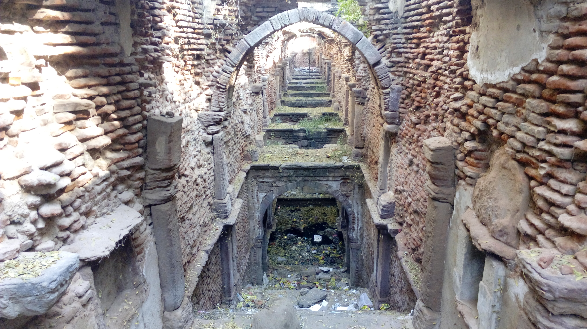
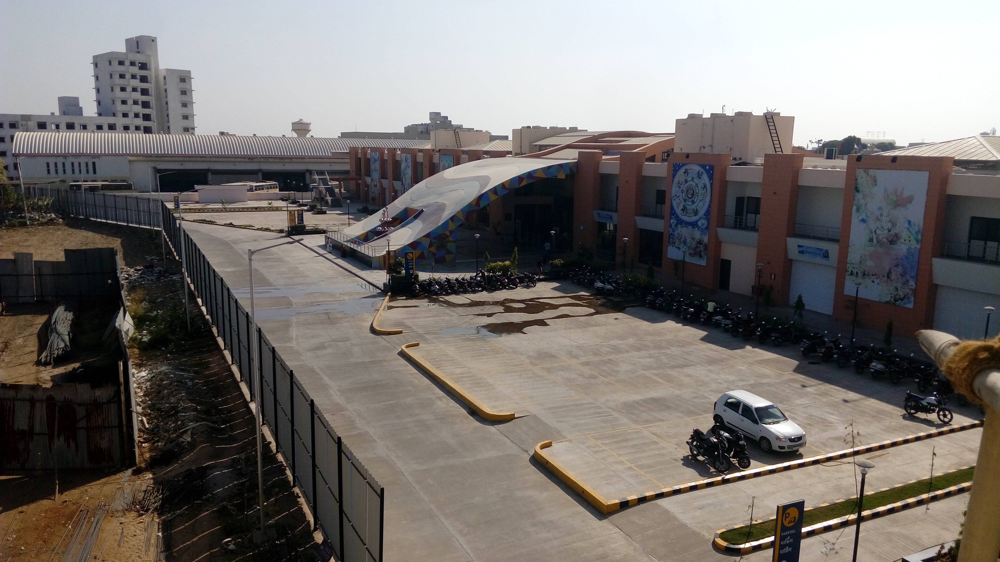
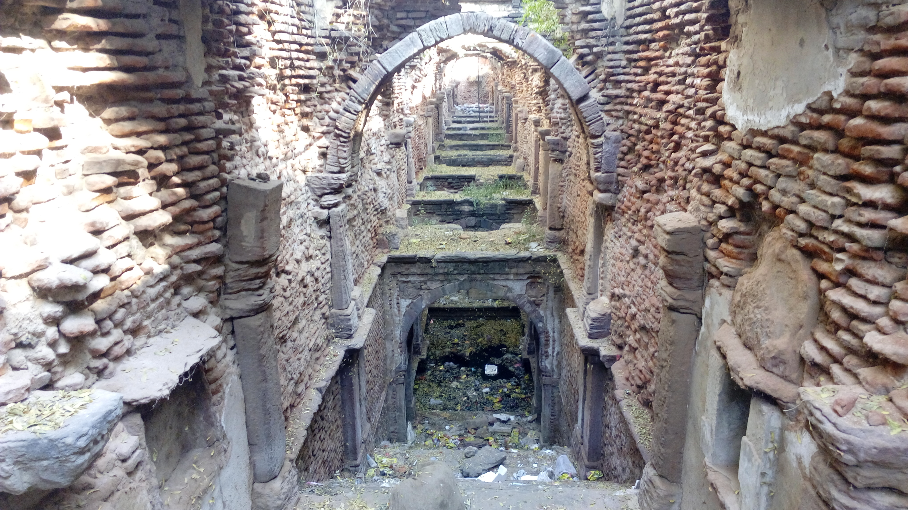
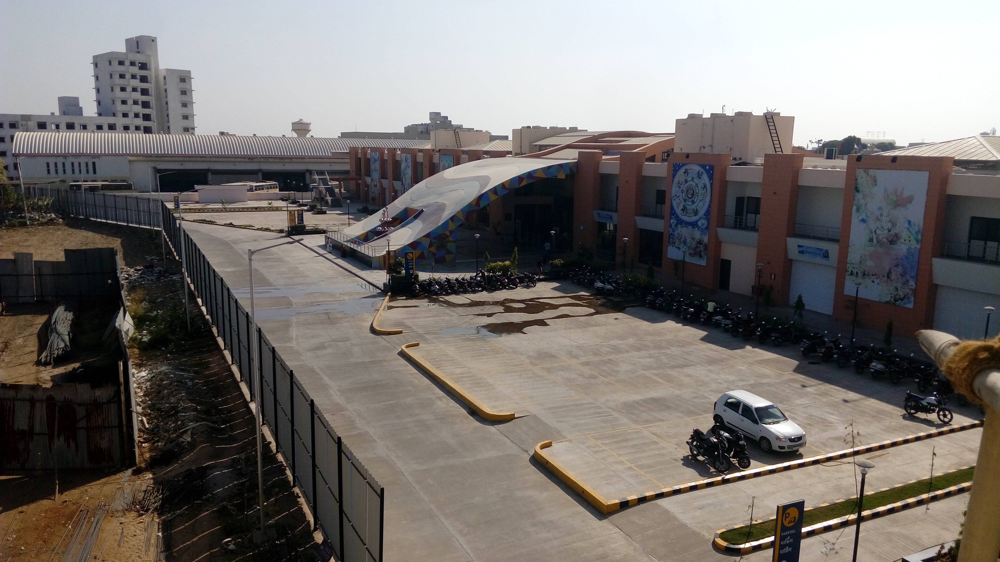

As of the 2011 India census, Mehsana had a population of 184,133.[1] The sex ratio was 894 females to 1,000 males.[1] Mehsana had an average literacy rate of 84.26%, higher than the national average. Male literacy was 91.88%, and female literacy was 76.12%.[1] 9.4% of Mehsana's population was under 6 years of age.[1] In 1921, it had population of 11,888.[9]. At 762,[1] Mehsana had the lowest child sex-ratio among the urban centres in India.[10].As per provisional reports of Census India, the population of Mehsana in 2011 was 184,991, of which male and female were 97,440 and 87,551, respectively. Its urban-metropolitan population was 190,753 of which 100,558 were males and 90,195 were females.[citation needed]
 



Mehsana was established by Mehsaji Chavda, Rajput heir of the Chavda dynasty. He constructed the Torana (arc gate) of the city and a temple dedicated to Goddess Toran in Vikram Samvat 1414, Bhadrapad Sud 10 (1358 AD).[5] It is described by Jaisinh Brahmbhatt in poems from 1932 AD,[6][7] and corroborated by Manilal Nyalchand, an author of Pragat Prabhavi Parshvanath of Samvat 1879 (1822 AD). He also states that Mehsaji built the temple dedicated to Chamunda. It inconclusively establishes that the town was founded during Rajput period. Another legend says that Mehsaji established it in Vikram Samvat 1375 (1319 AD).[8]
Gaekwads conquered Baroda and established Baroda State in 1721. They expanded their rule in north Gujarat and established Patan as its administrative headquarters. Later the headquarters was moved to Kadi and subsequently to Mehsana in 1902. The Gaekwad dynasty connected the city by Gaekwar's Baroda State Railway which was opened on 21 March 1887. Sayajirao Gaekwad III built Rajmahal palace in 1904 (Vikram Samvat 1956) at a cost of 443,532 rupees by the British architect Stevens. Intended for his son, Fatehsinhrao, who died shortly afterwards in 1908, the palace was then handed over to municipal authorities.[9] It is being used as a district court.[8][7]
Baroda State merged with the Union of India after independence in 1947. It was merged into Bombay State as Mehsana district. Later it became part of Gujarat in 1960 after the division of Bombay state into Gujarat and Maharashtra. Mehsana is headquarters of Mehsana district in north Gujarat.[8][6]
Mehsana has an average elevation of 265 feet (81 m) above sea level.
Mehsana Municipality (or Nagar Palika) was established in 1919–20. Following the merger of Baroda state with Bombay State on 1 August 1949, it was governed by Bombay District Municipal Act, 1902. Since 1 January 1956, it is governed under Gujarat Nagar Palika Act, 1963.[7] It falls under Mehsana Metropolitan Region.
As of the 2011 India census, Mehsana had a population of 184,133.[1] The sex ratio was 894 females to 1,000 males.[1] Mehsana had an average literacy rate of 84.26%, higher than the national average. Male literacy was 91.88%, and female literacy was 76.12%.[1] 9.4% of Mehsana's population was under 6 years of age.[1] In 1921, it had population of 11,888.[9]
At 762,[1] Mehsana had the lowest child sex-ratio among the urban centres in India.[10]
As per provisional reports of Census India, the population of Mehsana in 2011 was 184,991, of which male and female were 97,440 and 87,551, respectively. Its urban-metropolitan population was 190,753 of which 100,558 were males and 90,195 were females.
| Mehsana City | Total | Male | Female |
| City & outgrowths | 190,753 | 100,558 | 90,195 |
| Literates | 148,851 | 81,647 | 67,204 |
| Children (0–6) | 18,946 | 10,751 | 8,195 |
| Literacy | 89.64% | 94.18% | 84.69% |
| Sex Ratio | 899 | ||
| Child Sex Ratio | 762 |
Hinduism is the majority religion in Mehsana with 88.18% of the population being followers. Islam is the second-most-popular religion in the city at 9.26%, followed by Jainism at 1.62%, Sikhism 0.28%, Buddhism 0.28%,[clarification needed] and Christianity at 0.27%. Around 0.01% identified with other religions and approximately 0.36% were of no particular religion.
| Religion City | Population | Percentage |
| Hindu | 168,205 | 88.18% |
| Muslims | 17,673 | 9.26% |
| Jain | 3,099 | 1.62% |
| Not Stated | 688 | 0.36 |
| Sikh | 525 | 0.28% |
| Christian | 508 | 0.27% |
| Buddhist | 27 | 0.01% |
| Other | 28 | 0.01% |
Simandhar Swami Jain Derasar is a temple located near Modhera crossroads. It is 49 metres (161 ft) long, 30 metres (97 ft) broad and 33 metres (107 ft) high. The central deity (moolnayak) of the temple is a 12 feet (3.7 m) white idol of Simandhar Swami in lotus position (padmansa).[11]
Other major Hindu temples include: Pushtimarg temples Shri MadanMohanLalji temple and Shri Dwarkadhishji temple. Toranvali Mata temple, Brahmani Mata temple, Hinglaj Mata temple, Bahuchar Mata temple, Kalupur Gadi Swaminarayan temple, BAPS Swaminarayan temple, Gayatri temple, Ambika Mata temple and Somnath Mahadev temple.[8]
There is a temple dedicated to Ayyappa established by the South Indian community and a Gurdwara Sahib established by the Sikh community near Radhanpur crossroad on State Highway 41.
Christian churches include Mar Gregorious Orthodox Syrian Church.
Mehsana has dairy, agriculture and road-equipment based industry. It also has oil and natural gas production fields and various small- and medium-size industries. The banking and finance sectors have nationalised, cooperative, and private sector banks. Many large and small road-equipment industries are established in Mehsana-Dediyasan GIDC.
The city is known for its local Mehsani breed of buffaloes.
The Mehsana District Cooperative Milk Producer's Union, popularly known as Dudhsagar Dairy, is a member of the state-level Gujarat Cooperative Milk Marketing Federation and the largest dairy in Asia, processing on average 1.41 million kilograms of milk each day. It has established a network for procuring milk from 4,500,000 milk producers through 1,150 village milk cooperatives.[8]
Established in November 1967, the Mehsana fields are one of the largest onshore-producing assets of the Oil and Natural Gas Corporation (ONGC), covering an area of 6,000 km2 (2,300 sq mi) with 28 fields in 2007–08. Mehsana also has 1,311 oil wells, and 16 gas wells producing 6,000 tonnes per day.[8]
Wide-Angle Multiplex and Wow Cine Pulse provide entertainment facilities. Shanku's Water Park, Tirupati Nature Park and Bliss Water Park are located nearby.[citation needed] Mehsana has three radio stations; Top FM (92.7 MHz),[17] Radio Mirchi (91.1 MHz)[18] and relay station of Akashvani (100.1 MHz).
Mehsana has several facilities offering education to post-graduation. Ganpat University, located in Kherva 10 km (6.2 mi) from the city, offers specialisation in areas such as information technology, engineering, pharmacy, agriculture, science, management, arts and commerce. Gujarat Power Engineering College and Saffrony Institute of Technology offer courses in engineering and management. B.S. Patel College of Pharmacy offers courses in pharmacy, and is affiliated with Gujarat Technological University. Sarvajanik Kelvani Mandal Trust offers education in the fields of pharmacy, nursing, and homeopathy.
There are many primary and higher-secondary schools affiliated with Central Board of Secondary Education (CBSE) or Gujarat Board including: Kendriya Vidyalaya ONGC Mehsana, Jawahar Navodaya Vidyalaya (JNV) Vadnagar, and N.G. International School. T. J. Highschool operated by Nagrik Kelvani Mandal was established in 1889. Gurukul English Medium School started in 2012. Sarvajanik Kelvani Mandal Trust also runs many schools in north Gujarat. Other schools include Sabari Vidya Vihar, run by Dharma Sastha Seva Trust, and Bethany Mission School.
Gujarat State Road Transport Corporation (GSRTC) buses also connect Mehsana to other cities and villages. Auto rickshaws and taxis are available. Mehsana is approximately 75 km (47 mi) away from Ahmedabad. It is connected to Gandhinagar, Patan, Unjha and Palanpur via state highways.
Mahesana railway station is on the Jaipur–Ahmedabad line with daily trains to and from Delhi and Mumbai, and direct weekly or bi-weekly trains connecting major cities in north and south India, including Bangalore.
The nearest passenger airport is Sardar Vallabhbhai Patel International Airport at Ahmedabad. Prepaid taxis and GSRTC bus are available to Mehsana from the airport.
Mehsana Airport is currently used for non-scheduled operation and as a civil aviation training centre, operated by Ahmedabad Aviation and Aeronautics Ltd. It has an area covering 260,000 square metres (64 acres).